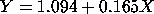
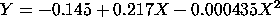

|
2.
Measurement Process Characterization
2.6. Case studies 2.6.5. Uncertainty analysis for extinguishing fire
|
|||
| The primary topic of this case study is on computing uncertainties. If you want to skip the model fitting stage, you can choose to view the final model only or go directly to the computation of the predicted values and the uncertainties of the predicted values. | |||
| Plot of the Data |
The first step in the analysis is to create a calibration curve
for the rotameter. This is accomplished by
fitting a curve to the
data points.
We plot the data in order to determine an appropriate model. This plot indicates that a linear model might be approriate. It also shows that the replicated points show very little deviation. That is, for each X value it appears that there is a single point when in fact there are 10 points. |
||
| Standard Deviation Plot |
We can use a standard
deviation plot to get a better view of the variation in the
data.
Although the standard deviations are quite small, the standard deviation plot shows the standard deviation increasing as the value of flux increases. The increase is particularly notable at flux equal 90. |
||
| Plot with Group Means Subtracted |
It would be interesting to know if this increasing spread is
due to a few outliers or is indicative of a pattern of increasing
variation as the value of flux increases. We can show this
by subtracting the group mean of the data values at each value
of flux.
This plot shows clearly that the variation is increasing as the value of flux increases. This means that we may need to use weighting or transformations in developing the calibration curve. |
||
| Linear Fit |
The initial plot indicated that a linear model might be
adequate. Dataplot generated the following output for a
linear fit (the output has been edited slightly for display).
LEAST SQUARES POLYNOMIAL FIT
SAMPLE SIZE N = 80
DEGREE = 1
REPLICATION CASE
REPLICATION STANDARD DEVIATION = 0.2554919757D-01
REPLICATION DEGREES OF FREEDOM = 72
NUMBER OF DISTINCT SUBSETS = 8
PARAMETER ESTIMATES (APPROX. ST. DEV.) T VALUE
1 A0 1.09419 (0.6796E-01) 16.
2 A1 0.164900 (0.1030E-02) 0.16E+03
RESIDUAL STANDARD DEVIATION = 0.2523804009
RESIDUAL DEGREES OF FREEDOM = 78
REPLICATION STANDARD DEVIATION = 0.0255491976
REPLICATION DEGREES OF FREEDOM = 72
LACK OF FIT F RATIO = 1256.5281 = THE 100.0000% POINT OF THE
F DISTRIBUTION WITH 6 AND 72 DEGREES OF FREEDOM
The linear fit generated the model
 |
||
| Plot of Predicted Values with Raw Data |
To
assess the validity of
the fit, we plot the predicted values with the raw data.
This plot indicates a good fit. |
||
| 4-Plot of Residuals |
The next step in the model validation is a residual analysis to
test the model
assumptions. We generate a
4-plot
of the residuals to do this.
This 4-plot reveals serious violations of the regression assumptions. Specifically, the run sequence plot in the upper left corner shows a non-random pattern and it shows a violation of the assumption of constant location for the residuals. The lag plot in the upper right corner shows that the residuals have a strong autocorrelation, which violates the assumption of randomness for the residuals. When the randomness assumption is violated, the distributional plots (the histogram in the lower left corner and the normal probability plot in the lower right corner) are not meaningful. |
||
| Quadratic Fit |
To address these assumption violations, we next fit a
quadratic model.
LEAST SQUARES POLYNOMIAL FIT
SAMPLE SIZE N = 80
DEGREE = 2
REPLICATION CASE
REPLICATION STANDARD DEVIATION = 0.2554919757D-01
REPLICATION DEGREES OF FREEDOM = 72
NUMBER OF DISTINCT SUBSETS = 8
PARAMETER ESTIMATES (APPROX. ST. DEV.) T VALUE
1 A0 -0.144687 (0.2165E-01) -6.7
2 A1 0.217063 (0.8339E-03) 0.26E+03
3 A2 -0.434694E-03 (0.6847E-05) -63.
RESIDUAL STANDARD DEVIATION = 0.0347798578
RESIDUAL DEGREES OF FREEDOM = 77
REPLICATION STANDARD DEVIATION = 0.0255491976
REPLICATION DEGREES OF FREEDOM = 72
LACK OF FIT F RATIO = 14.1379 = THE 100.0000% POINT OF THE
F DISTRIBUTION WITH 5 AND 72 DEGREES OF FREEDOM
The fitted quadratic model is
 |
||
| Plot of Predicted Values with Raw Data |
To assess the model, we generate the plot of the predicted values
with the raw data.
|
||
| 4-Plot of Residuals |
We again use the 4-plot to do a residual analysis.
This 4-plot does not show major violations of the regression assumptions. The run sequence plot of the residuals in the upper left corner indicates constant location and scale for the residuals. The lag plot in the upper right corner does not show significant autocorrelation for the residuals. The histogram and normal probability plot indicate that the residuals are reasonably approximated by a normal distribution. |
||
| Outliers |
Even though the 4-plot above showed a reasonable fit, all
four of these plots indicate a few outliers.
These are due to the increasing standard deviation as the
value of flux increases.
There are several approaches we can take towards addressing the outliers in the residual plots.
|
||
| Final Model |
For this particular data set, there is little practical
difference in the fitted quadratic model regardless of
which approach was used. We have taken the trouble to
show the different approaches because each of these
approaches, or some combination of these approaches, may
be useful for other data sets.
For this case study, we will use the quadratic model based on deleting two outliers. |
||